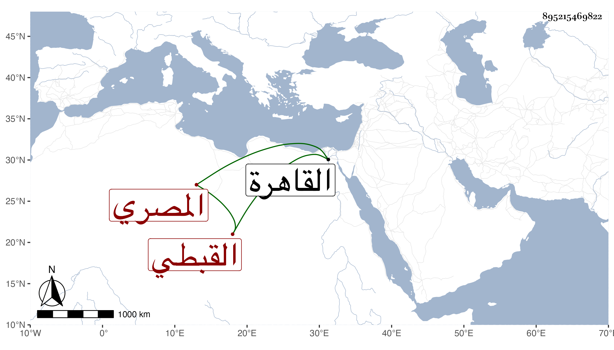

0902Sakhawi.DawLamic.ITO20230111-ara1.EIS1600.895215469822
Biography ID: 895215469822
إبراهيم بن عبد الغني بن إبراهيم أمين الدين بن مجدالدين القبطي المصري ويعرف بابن الهيصم . ولد تقريبا في أوائل القرن بالقاهرة ونشأ بها في كنف السعادة تحت نظر أبيه ثم عمه التاج عبد الرزاق إلى أن كتب المنسوب وبرع في الحساب فباشر في عدة جهات ثم انتقل إلى نظر الدولة عقب الكريمي عبد الكريم بن كاتب جكم في جمادى الأولى سنة ثمان وعشرين فدام فيها إلى سنة سبع وثلاثين فاستقر حينئذ في الوزارة بالدار المصرية بعد صرف الكريمي بن كاتب المناخات ولم يلبث إلا أشهرا ثم اختفى إلى أن ظهر بشفاعة اينال الا بوبكري الخازندار فيه وولي بعد ذلك نظر المفرد ثم أعيد إلى نظر الدولة ومكث فيها سنين إلى يوم الاثنين ثامن جمادى الآخرة سنة إحدى وخمسين فأعاده الظاهر إلى الوزر عوض ابن كاتب المناخ أيضا فباشره حينئذ مباشرة جيدة لا سيما لما وقع الشراقي والغلاء في سنة أربع وخمسين بحيث ألبس في تلك الأيام عدة خلع شكرا له على سده إياها ثم عجز واستعفى فأعفى واستقر عوضه تغرى بردى القلاوي في شوال سنة ست وخمسين إلى أن أعفي وأعيد الأميني في أيام المنصور تاسع عشر صفر سنة سبع وخمسين ثم بعد أشهر وذلك في مستهل رمضان اختفى لعجزه وقرر عوضه كاتب المماليك فرج بن النجا إلى أن ظهر صاحب الترجمة بأمان فأعيد في جمادى الأولى سنة ثمان وخمسين فما كان بأسرع من عجزه وطلبه للاستعفاء فلم يجب فاختفى في أثناء ذي القعدة منها وأعيد فرج واستمر اختفاء هذا إلى أن مرض وسمح له بالاقامة ببيته حتى مات في ليلة الجمعة مستهل ربيع الآخر وقيل في يوم الأحد ثامن عشر صفر سنة تسع وخمسين وكان رئيسا خفيف الظلم بالنسبة كثير التجمل في ملبسه ومركبه غاية في الترف منعزلا عن الاقباط بحيث تزوج من المسلمين وحج وحفر بالكاملية بئرا عظم النفع بها للمصلين وغيرهم ومال إلى الفقراء والصالحين وعظم اعتقاده فيهم واشتدت رغبته في الاحسان إليهم بالبذل وغيره مع الاكثار من زيارتهم . وبالجملة فكان من أصلح الموجودين من أبناء جنسه رحمه الله وعفا عنه وإيانا وهو قريب الجمالي بن كاتب جكم وأخيه الآتي قريبا أمهما سارة ابنة التاج عبد الرزاق عم صاحب الترجمة .
